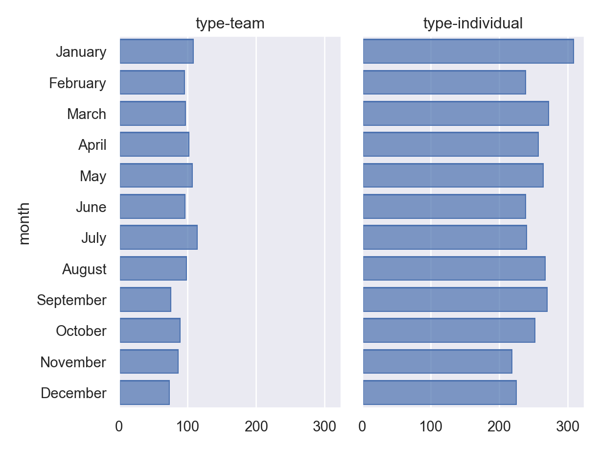

base_url="https://olympics.com/en/paris-2024/athletes/"
sports={"artistic gymnastics": "artistic-gymnastics", "soccer": "football", "swimming": "swimming", "volleyball": "volleyball", "basketball": "basketball", "track and field": "athletics" }Data Jamboree – Python
Lists of Athletes
Let’s start out by getting a list of URLs that we need to scrape. In R, I’d probably just paste these in and put each one on a new line so that it was pretty, but Python doesn’t allow that kind of shenanigans easily, so instead, I’ll define a base URL and a dict that maps the sport name colloquially to the url endpoint. This probably wouldn’t be necessary if track and field sports weren’t called “athletics” as a URL endpoint… we could just use a list in that case. But websites can’t do things so that they’d be easy for me to scrape the data, now, can they?
Ugh, I hate working with dicts. Let’s just make a DataFrame in Pandas, for sanity sake, and include the individual and team sport designations as well – we’ll want that later.
import pandas as pd
sport_type= {"type-team": ['soccer', 'volleyball', 'basketball'],"type-individual": ['artistic gymnastics', 'swimming', 'track and field']}
# Get into a long-form data frame
sport_type = pd.melt(pd.DataFrame(sport_type), id_vars = [], var_name = 'type', value_name = 'sport')
# Create a dataframe from the dict
sport_urls = pd.DataFrame({"sport":sports.keys(), "urlname":sports.values()})
# Combine the two data frames
sport_df = pd.merge(sport_type, sport_urls)
# Create full URLs
sport_df['url'] = base_url + sport_df.urlname
sport_df type ... url
0 type-team ... https://olympics.com/en/paris-2024/athletes/fo...
1 type-team ... https://olympics.com/en/paris-2024/athletes/vo...
2 type-team ... https://olympics.com/en/paris-2024/athletes/ba...
3 type-individual ... https://olympics.com/en/paris-2024/athletes/ar...
4 type-individual ... https://olympics.com/en/paris-2024/athletes/sw...
5 type-individual ... https://olympics.com/en/paris-2024/athletes/at...
[6 rows x 4 columns]Then, we need to use BeautifulSoup, which is the python package for web scraping. I use python relatively frequently, but I haven’t used it for webscraping in about 10 years (and even then, only for one small project), so I’m going to include links to the reference files. Luckily, webscraping is mostly knowing HTML structure and how web pages work + programming, so hopefully my python skills are up to the task. Certainly, the HTML knowledge will transfer :).
Initial Attempt
Sometimes, it’s easier to figure out how to do things once, and then build that into a function that can map to a list of options.
# https://stackoverflow.com/questions/24153519/how-to-read-html-from-a-url-in-python-3
# import urllib.request
#
# page_bytearray = urllib.request.urlopen(sport_df.urls[0])
# page = page_bytearray.read()Well, this didn’t work out, exactly. It hangs and doesn’t respond. Is it the URL that’s the problem, or the code?
import urllib.request
page_bytearray = urllib.request.urlopen("https://google.com")
page = page_bytearray.read()Since google works, we can assume that it’s (probably) something with the website. Lots of servers screen out automatic requests from people who don’t identify themselves. We can try providing a user-agent from a browser to see if that helps…an easy way to get latest user agents for different OS and browser versions is to look here. Let’s tell the server we’re using Firefox on Windows.
“Mozilla/5.0 (Windows NT 10.0; Win64; x64; rv:131.0) Gecko/20100101 Firefox/131.0”
# https://stackoverflow.com/questions/24226781/changing-user-agent-in-python-3-for-urrlib-request-urlopen
import urllib.request
req = urllib.request.Request(sport_df.url[0], data = None, headers = {'User-Agent':'Mozilla/5.0 (Windows NT 10.0; Win64; x64; rv:131.0) Gecko/20100101 Firefox/131.0'})
page_bytearray = urllib.request.urlopen(req)
page = page_bytearray.read()
page_bytearray.close()Yay, that worked! Now we can read all the links on the page and see what happens.
from bs4 import BeautifulSoup, SoupStrainer
items_to_keep = SoupStrainer("a", attrs = {"class": "competitor-container"})
for link in BeautifulSoup(page, 'html.parser', parse_only=items_to_keep):
if link.has_attr('href'):
print(link['href'])Hmm, interesting - there’s no links to individual athlete pages, and I can use developer mode to see those definitely exist. So, next, let’s pull Pandas out - it has a handy function to read tables, and we can use that to see if there is a table there at all in the version of the page we have. If there isn’t, then we can assume (without delving into the code) that the data is being loaded with JavaScript after the HTML request is made… in that case, we’ll have to use Selenium to get the data.
import pandas as pd
pd.read_html(page)Error: ImportError: Missing optional dependency 'html5lib'. Use pip or conda to install html5lib.Ok, well, that’s clear enough. Let’s just move to using Selenium.
Selenium
from selenium import webdriver
from selenium.webdriver.common.by import By
import time # to ensure page loads before we get source
browser = webdriver.Firefox()
browser.implicitly_wait(30) # Sets timeout -- how long to wait for something to work
time.sleep(2) # Wait for page to load
browser.get(sport_df.url[0])
tbl = pd.read_html(browser.page_source)<string>:1: FutureWarning: Passing literal html to 'read_html' is deprecated and will be removed in a future version. To read from a literal string, wrap it in a 'StringIO' object.pd.DataFrame(tbl[0]).head() # Get first table NameMove up ... DisciplineMove up
0 AARONSON Paxten AARONSON P ... FootballFootball
1 ABADA Liel ABADA L ... FootballFootball
2 ABDIRAKHMATOV Zafarmurod ABDIRAKHMATOV Z ... FootballFootball
3 ABELLEIRA Teresa ABELLEIRA T ... FootballFootball
4 ABIODUN Deborah ABIODUN D ... FootballFootball
[5 rows x 3 columns]Sweet, we get a table, finally!
Let’s take care of one simple thing first: if we accept cookies, we can get rid of the modal over the browser window, which is nice. With Selenium, we usually have to specify how to click and interact with a webpage. We can right click on the button and say “Inspect” to get the HTML ID, which is onetrust-accept-btn-handler. Then, using Selenium, we find that element and click on it. This is basically using Python as a remote control to interact with a web page.
# First, accept the stupid cookies to clear out the modal
# This has to be done once per session
cookie_btn = browser.find_element(By.ID, "onetrust-accept-btn-handler")
cookie_btn.click()Now let’s see if we can get the links to the athlete pages out of the table. We want to only keep links that have class competitor-container, which we get by looking through the HTML:
athletes = [] # empty array to store things in
items_to_keep = SoupStrainer("a", attrs = {"class": "competitor-container"})
for link in BeautifulSoup(browser.page_source, 'html.parser', parse_only=items_to_keep):
if link.has_attr('href'):
athletes.append(link['href'])
athletes[0:6]['/en/paris-2024/athlete/paxten-aaronson_1943846', '/en/paris-2024/athlete/liel-abada_1956102', '/en/paris-2024/athlete/zafarmurod-abdirakhmatov_1896691', '/en/paris-2024/athlete/teresa-abelleira_1959947', '/en/paris-2024/athlete/deborah-abiodun_1971188', '/en/paris-2024/athlete/-adriana_1967574']len(athletes)50Ok, so we have 50 athletes. Let’s go ahead and see if we can get the rest – there are 190 athletes in the list.
To get the next page, we just need to click the “next” button, in theory. In practice, Selenium gets a bit grumpy about clicking buttons that aren’t visible on the page, so we’ll have to be a bit more creative.
next_button = browser.find_element(By.CSS_SELECTOR, ".mirs-pagination-right > button:nth-child(2)")
next_button.click()Error: selenium.common.exceptions.ElementNotInteractableException: Message: Element <button class="me-2 btn btn-secondary btn-sm" type="button"> could not be scrolled into view
Stacktrace:
RemoteError@chrome://remote/content/shared/RemoteError.sys.mjs:8:8
WebDriverError@chrome://remote/content/shared/webdriver/Errors.sys.mjs:193:5
ElementNotInteractableError@chrome://remote/content/shared/webdriver/Errors.sys.mjs:353:5
webdriverClickElement@chrome://remote/content/marionette/interaction.sys.mjs:167:11
interaction.clickElement@chrome://remote/content/marionette/interaction.sys.mjs:136:11
clickElement@chrome://remote/content/marionette/actors/MarionetteCommandsChild.sys.mjs:205:29
receiveMessage@chrome://remote/content/marionette/actors/MarionetteCommandsChild.sys.mjs:85:31So we need to do this for each page. Note: This chunk actually works well interactively, but Once we get to the end, the button is disabled… which is a good signal for us! One thing that we do need to do is to make sure the button is “in view” on the page, which requires a little trickery - we have to send a javascript command to the browser to move to where the button is within the viewable page.
This can be tricky and doesn’t always work, so I’ve done everything within a try statement that will maneuver to the element and then key up a couple of times; if it fails, it will just try again. Unfortunately, the trying again can leave duplicates in our athletes list, which isn’t optimal, so I added a bit of deduplication code in there.
It’s a kludgy mess, and I’m sure there’s a more elegant way to do this, but I’m trying to reliably get to a solution (we could optimize the code after we have working code, if we had time). Honestly, every time I’ve used Selenium in any language, the code feels kludgy – but it’s also cool to code up a remote-control web driver, so… you manage to get over the icky feelings.
from selenium.webdriver.common.action_chains import ActionChains
from selenium.webdriver.common.keys import Keys
# A function to hit the up key in a
# browser a specified number of times
def upArrow(browser, times):
for i in range(0, times):
ActionChains(browser).key_down(Keys.UP).key_up(Keys.UP).perform()
return
browser.get(sport_df.url[1]) # Start over
time.sleep(1) # Wait for page to load
athletes = []
while True:
# We'll break out of this loop, but this is simpler than other options, like detecting how many pages there are...
# Get current page's info
items_to_keep = SoupStrainer("a", attrs = {"class": "competitor-container"})
for link in BeautifulSoup(browser.page_source, 'html.parser', parse_only=items_to_keep):
if link.has_attr('href'):
athletes.append(link['href'])
# Remove duplicates
# This is probably not the best way to do this -- we could do it at the end -- but it's easy enough for now
athletes = list(set(athletes))
# Move to next page, if possible
next_button = browser.find_element(By.CSS_SELECTOR, ".mirs-pagination-right > button:nth-child(2)")
try:
if next_button.is_enabled():
next_button.click()
else:
break;
except:
# Find footer - needed for scrolling
footer = browser.find_element(By.ID, "poweredByFooter")
# Scroll to pagination box
browser.execute_script("window.scrollTo(0, " + str(footer.location['y']) + ")")
# Hit up key ~ 4x
upArrow(browser, 4)
else:
print("Next page, coming up!")Next page, coming up!
Next page, coming up!
Next page, coming up!
Next page, coming up!
Next page, coming up!
Next page, coming up!Make a Function and go!
Now, we need to encapsulate all of this into a function (or a couple of functions) so that we can get all of the athletes for each sport.
def get_all_athletes(browser, url):
browser.get(url) # Start over
time.sleep(1) # Wait for page to load
athletes = []
while True:
# We'll break out of this loop, but this is simpler than other options, like detecting how many pages there are...
# Get current page's info
items_to_keep = SoupStrainer("a", attrs = {"class": "competitor-container"})
for link in BeautifulSoup(browser.page_source, 'html.parser', parse_only=items_to_keep):
if link.has_attr('href'):
athletes.append(link['href'])
# Remove duplicates
# This is probably not the best way to do this -- we could do it at the end -- but it's easy enough for now
athletes = list(set(athletes))
# Move to next page, if possible
next_button = browser.find_element(By.CSS_SELECTOR, ".mirs-pagination-right > button:nth-child(2)")
try:
if next_button.is_enabled():
next_button.click()
else:
break;
except:
# Find footer - needed for scrolling
footer = browser.find_element(By.ID, "poweredByFooter")
# Scroll to pagination box
browser.execute_script("window.scrollTo(0, " + str(footer.location['y']) + ")")
ActionChains(browser).key_down(Keys.UP).key_up(Keys.UP).perform()
# else:
# print("Next page, coming up!")
return athletes
res = get_all_athletes(browser, sport_df.url[1])
len(res) # should be 311311Next, we apply this function to each different sport – I’ve set this chunk to not evaluate, so that we don’t re-run it each time - I ran it once interactively and saved the data to athlete-addresses.csv.
# Apply the function to every sport's athletes
sport_df['athletes'] = list(map(lambda x: get_all_athletes(browser, x), sport_df.url))
# "Explode" the nested data frame into something where each athlete is a row
athletes_df = sport_df.explode('athletes', ignore_index = True)
# Create urls for each athlete
athletes_df['url'] = "https://olympics.com" + athletes_df.athletes
# Drop old url column - redundant
athletes_df = athletes_df.drop(axis = 1, columns = 'athletes')Let’s save this data so that we don’t have to re-run this every time…
athletes_df.to_csv("athlete-addresses.csv")# Close browser session
browser.close()Individual Athlete Pages
Once we have a data frame with each athlete’s URL as the row, we can scrape the information from each athlete’s page.
import pandas as pd
athletes_df = pd.read_csv("athlete-addresses.csv")Let’s start by building a function to pull the information out of each athlete’s page, and then we can map that function to each athlete to get our data.
from selenium import webdriver
from selenium.webdriver.common.by import By
browser = webdriver.Firefox()
browser.implicitly_wait(30) # Sets timeout -- how long to wait for something to work
## Setting up - cookie shenanigans
browser.get(base_url) # Go to main page
cookie_btn = browser.find_element(By.ID, "onetrust-accept-btn-handler")
cookie_btn.click()
def get_person_info(browser, url):
# Get URL in browser
browser.get(url)
# Attempt to find person info, if not, return URL in a data frame and try later
try:
person_info = browser.find_element(By.ID, "PersonInfo")
sub_fields = person_info.find_elements(By.CSS_SELECTOR, "b")
except:
info = pd.DataFrame({'url': url})
else:
info = pd.DataFrame({'field': [i.text for i in sub_fields], 'value': [i.find_element(By.XPATH, "..").text for i in sub_fields]})
# First entry is the name - surname is in all caps, first name is title-case, but some athletes don't have first names, so we'll handle the name as a single string for simplicity
info['field'][0] = 'name'
# remove field info from value column
info['value'] = info.apply(lambda row: row['value'].replace(str(row['field']), ''), axis =1)
info['field'] = info.field.str.replace(r": ", '')
info['value'] = info.value.str.strip()
info['field'] = info.field.str.strip()
info['field'] = info.field.str.replace(r" ", "_")
# just keep meters
info['field'] = info.field.str.replace('_/_ft_in', '')
info['value'] = info.value.str.replace(r'/\d.\d{1,2}..$', '', regex = True)
info['id'] = 0
info = info.pivot(index = 'id', columns = 'field', values = 'value')
info['events'] = [pd.read_html(browser.page_source)[0]]
return info
test = get_person_info(browser, athletes_df.url[5])<string>:28: FutureWarning: Passing literal html to 'read_html' is deprecated and will be removed in a future version. To read from a literal string, wrap it in a 'StringIO' object.test
# Close the browser when we're donefield Age ... events
id ...
0 19 ... Discipline Event Rank ...
[1 rows x 10 columns]browser.close()
# Commenting this out so that it doesn't get run every time
# We save the results after successfully scraping it once.
# athlete_data = pd.DataFrame()
#
# for i in athletes_df.url[669:4213]:
# athlete_data = pd.concat([athlete_data, get_person_info(browser, i)])
#
# athlete_data.to_csv("Scraped-Athlete-Results.csv")This took a while, and I had to restart it once because of an error with selenium, but finally, it worked!
Note: Pythonic would usually involve a map() statement – I tried that first, but because selenium is a bit finicky, it was better (and more efficient) to use a for loop that saved the intermediate results. While this isn’t awesome from a reproducibility standpoint (I had to monitor and restart this code a couple of different times, and I let it scrape overnight), it reduces the server load of making some 4000 requests for athlete pages, so it’s a bit more ethical as well.
Note that I didn’t need to scrape the birthdays off of wikipedia because the olympics page provided them. Now, it’s possible that scraping the data from Wikipedia could have been done with straight URL requests and not with selenium, which would have been faster. If I get time, I’ll come back to that possibility at the end, but I’m most interested in actually solving the ultimate analysis question. So let’s move on to that.
Examining Birthdays!
Now that we have all the birthday data, we need to do a bit of work to get it into analyzable form. First, let’s go ahead and read the data in from the saved CSVs, since we’d like to not be required to re-scrape the data every time this file is compiled.
Since we know that our CSV was scraped in order, we can create an ID variable to use to combine the two CSVs – one has the sport/type information, the other has the athlete information. Ideally, we’d have saved the page URL as a column, but we could do that by going back and rescraping, which would take forever (which is what I’d do in a real, not time-limited analysis), or we can just make this assumption that we haven’t scrambled the data order.
import pandas as pd
athletes_df = pd.read_csv("athlete-addresses.csv")
athletes_df = athletes_df.rename(columns={'Unnamed: 0':'id'})
athlete_data = pd.read_csv("Scraped-Athlete-Results.csv")
athlete_data['id'] = athlete_data.index
full_athlete_data = pd.merge(athlete_data, athletes_df)First step is to get the data that we need for this analysis into proper form – string dates need to be read in as actual dates, we need discipline, name, and probably country (as one assumes that school/grade/sport cutoffs might differ country by country). I don’t think Malcolm Gladwell made any claims about countries outside of Canada, but I know personally that the US cutoffs tend to be driven by the academic school year, at least in the parts of the country that I’ve lived in.
# Create date variable for birthday
full_athlete_data['bday'] = pd.to_datetime(full_athlete_data.Date_of_Birth)
# Get specific columns -- declutter, not actually necessary
athlete_data = full_athlete_data[["id", "type", "sport", "name", "Birth_Country", "Residence_Country", "Gender", "bday", "Age", "events"]].copy()
months = ['January', 'February', 'March', 'April',
'May', 'June', 'July', 'August',
'September', 'October', 'November', 'December']
# Break bday down into separate components
athlete_data['year'] = athlete_data['bday'].dt.year
athlete_data['month'] = pd.Categorical(athlete_data['bday'].dt.month_name(), categories = months)
athlete_data['day'] = athlete_data['bday'].dt.dayI’ll confess I’m more used to the decimal_date function in R/lubridate, and I’m envisioning being able to just look at a density plot of each sport’s birthdays over time (modulo year), since that should be enough precision for this assessment. I didn’t find a handy equivalent in pandas or the date/time libraries in Python, so let’s build one…
from datetime import datetime
def decimal_date(date):
start_of_year = datetime(date.year, 1, 1)
end_of_year = datetime(date.year + 1, 1, 1)
days_in_year = (end_of_year - start_of_year).days
return date.year + (date - start_of_year).days / days_in_year
# Decimal date
athlete_data['ddate'] = [decimal_date(i) for i in athlete_data.bday]
# Get fractional date - subtract off year
athlete_data['fdate'] = athlete_data.ddate - athlete_data.yearThen, we can start making plots (my favorite part!)
import seaborn as sns
import seaborn.objects as so
p = (
so.Plot(athlete_data, y = "month")
.add(so.Bar(), so.Count())
.facet("type")
.scale()
)
p.show()
Ok, so if we just do a very crude measure of this hypothesis that Olympians are more likely to be born earlier in the year for team and individual sports, we see that those born in January-March are over-represented, but so are those born in August-September.
If we break things down by sport, we get a slightly murkier picture…
p = (
so.Plot(athlete_data, y = "month")
.add(so.Bar(), so.Count())
.facet("sport").share(x=False)
)
p.show()Soccer certainly seems to have fewer people born in the later months of the year; birthdays are relatively uniform across months for volleyball (which has fewer players). Basketball seems to have more summer birthdays, with fewer birthdays in the first few months of the year (though this may be spurious).
Artistic gymnastics has relatively few participants, but October is the most common birthday month, and there are possibly more people with birthdays in the latter half of the year. There are notably more people with birthdays in months with 31 days relative to 30, which is one artifact of the rough method I’ve used here – but it’s interesting that it shows up in artistic gymnastics, which has relatively fewer participants. In swimming, there’s a slight overrepresentation of birthdays in Jan/August (and this is over many more athletes). Track and Field athletes seem to be relatively uniformly distributed (accounting for days in the month), with possibly fewer people in the last 3 months of a year.